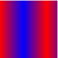

Shapeの基礎の基礎
@SWF研究会#2
Kensaku Araga
September 25, 2012
Kensaku Araga
September 25, 2012
簡単な1フレームのSWFをベクターデータとして再現できるようになる
ポイントの移動
直線を引く
二次ベジェ曲線
// drawRectを使う
public function draw(): void
{
var shape: Shape = new Shape();
shape.graphics.lineStyle(4, 0x0000ff);
shape.graphics.beginFill(0xff0000, 1.0);
shape.graphics.drawRect(50, 70, 140, 140);
addChild(shape);
}
|
// SWFで使える機能のみを使う
public function lineTo(): Shape
{
var shape: Shape = new Shape();
shape.graphics.lineStyle(4, 0x0000ff);
shape.graphics.beginFill(0xff0000, 1.0);
shape.graphics.moveTo(50, 70);
shape.graphics.lineTo(50, 210);
shape.graphics.lineTo(190, 210);
shape.graphics.lineTo(190, 70);
shape.graphics.lineTo(50, 70);
addChild(shape);
}
|
// drawCircleを使う
public function draw(): void
{
var shape: Shape = new Shape();
shape.graphics.lineStyle(4, 0x0000ff);
shape.graphics.beginFill(0xff0000, 1.0);
shape.graphics.drawCircle(100, 100, 90);
addChild(shape);
}
|
// SWFで使えるものだけを使う
public function draw(): void
{
var shape: Shape = new Shape();
shape.graphics.lineStyle(4, 0x0000ff);
shape.graphics.beginFill(0xff0000, 1.0);
shape.graphics.moveTo(163.60, 163.60);
shape.graphics.curveTo(137.30, 190.00, 100.00, 190.00);
shape.graphics.curveTo(62.65, 190.00, 36.30, 163.60);
shape.graphics.curveTo(10.00, 137.30, 10.00, 100.00);
shape.graphics.curveTo(10.00, 62.65, 36.30, 36.30);
shape.graphics.curveTo(62.65, 10.00, 100.00, 10.00);
shape.graphics.curveTo(137.30, 10.00, 163.60, 36.30);
shape.graphics.curveTo(190.00, 62.65, 190.00, 100.00);
shape.graphics.curveTo(190.00, 137.30, 163.60, 163.60);
addChild(shape);
}
|
⇒
moveTo、lineTo、curveTo、塗り、線
があれば、どんな言語にも
必ずコンバートできる
|
swfdumpで中身を見てみよう
$ swfdump --shapes sample/sample.swf
[002] 146 DEFINESHAPE defines id 0001
| fillstyles(02) linestyles(00)
| 1 ) SOLID 000066ff
| 2 ) SOLID ff0000ff
|
| fill: 00/02 line:00 - moveTo 189.85 69.05
| fill: 00/02 line:00 - splineTo (199.95 79.15) 199.95 93.45
| fill: 00/02 line:00 - splineTo (199.95 107.75) 189.85 117.85
| fill: 00/02 line:00 - splineTo (180.55 127.15) 167.75 127.90
| fill: 00/02 line:00 - lineTo 209.70 200.65
| fill: 00/02 line:00 - lineTo 121.25 200.65
| fill: 00/02 line:00 - lineTo 163.30 127.90
| fill: 00/02 line:00 - splineTo (150.40 127.20) 141.05 117.85
| fill: 00/02 line:00 - splineTo (130.95 107.75) 130.95 93.45
| fill: 00/02 line:00 - splineTo (130.95 79.15) 141.05 69.05
| fill: 00/02 line:00 - splineTo (151.15 58.95) 165.45 58.95
| fill: 00/02 line:00 - splineTo (179.75 58.95) 189.85 69.05
| fill: 00/01 line:00 - moveTo 106.00 93.45
| fill: 00/01 line:00 - splineTo (106.00 107.75) 95.90 117.85
| fill: 00/01 line:00 - splineTo (90.50 123.25) 83.95 125.75
| fill: 00/01 line:00 - lineTo 116.20 125.75
| fill: 00/01 line:00 - lineTo 72.00 202.35
| fill: 00/01 line:00 - lineTo 27.75 125.75
| fill: 00/01 line:00 - lineTo 59.10 125.75
| fill: 00/01 line:00 - splineTo (52.50 123.25) 47.10 117.85
| fill: 00/01 line:00 - splineTo (37.00 107.75) 37.00 93.45
| fill: 00/01 line:00 - splineTo (37.00 79.15) 47.10 69.05
| fill: 00/01 line:00 - splineTo (57.20 58.95) 71.50 58.95
| fill: 00/01 line:00 - splineTo (85.80 58.95) 95.90 69.05
| fill: 00/01 line:00 - splineTo (106.00 79.15) 106.00 93.45
|
ActionScript3.0で書いてみよう
public function shape(): Shape
{
var shape: Shape = new Shape();
shape.graphics.beginFill(0xff0000, 1); // 2
shape.graphics.moveTo(189.85, 69.05); // fill 00/02, line 00
shape.graphics.curveTo(199.95, 79.15, 199.95, 93.45); // fill 00/02, line 00
shape.graphics.curveTo(199.95, 107.75, 189.85, 117.85); // fill 00/02, line 00
shape.graphics.curveTo(180.55, 127.15, 167.75, 127.90); // fill 00/02, line 00
shape.graphics.lineTo(209.70, 200.65); // fill 00/02, line 00
shape.graphics.lineTo(121.25, 200.65); // fill 00/02, line 00
shape.graphics.lineTo(163.30, 127.90); // fill 00/02, line 00
shape.graphics.curveTo(150.40, 127.20, 141.05, 117.85); // fill 00/02, line 00
shape.graphics.curveTo(130.95, 107.75, 130.95, 93.45); // fill 00/02, line 00
shape.graphics.curveTo(130.95, 79.15, 141.05, 69.05); // fill 00/02, line 00
shape.graphics.curveTo(151.15, 58.95, 165.45, 58.95); // fill 00/02, line 00
shape.graphics.curveTo(179.75, 58.95, 189.85, 69.05); // fill 00/02, line 00
shape.graphics.beginFill(0x000066, 1); // 1
shape.graphics.moveTo(106.00, 93.45); // fill 00/01, line 00
shape.graphics.curveTo(106.00, 107.75, 95.90, 117.85); // fill 00/01, line 00
shape.graphics.curveTo(90.50, 123.25, 83.95, 125.75); // fill 00/01, line 00
shape.graphics.lineTo(116.20, 125.75); // fill 00/01, line 00
shape.graphics.lineTo(72.00, 202.35); // fill 00/01, line 00
shape.graphics.lineTo(27.75, 125.75); // fill 00/01, line 00
shape.graphics.lineTo(59.10, 125.75); // fill 00/01, line 00
shape.graphics.curveTo(52.50, 123.25, 47.10, 117.85); // fill 00/01, line 00
shape.graphics.curveTo(37.00, 107.75, 37.00, 93.45); // fill 00/01, line 00
shape.graphics.curveTo(37.00, 79.15, 47.10, 69.05); // fill 00/01, line 00
shape.graphics.curveTo(57.20, 58.95, 71.50, 58.95); // fill 00/01, line 00
shape.graphics.curveTo(85.80, 58.95, 95.90, 69.05); // fill 00/01, line 00
shape.graphics.curveTo(106.00, 79.15, 106.00, 93.45); // fill 00/01, line 00
return shape;
}
JavaScriptでも書いてみよう
onload = function() {
var canvas = document.getElementById('shape');
var ctx = canvas.getContext('2d');
ctx.beginPath();
ctx.fillStyle = '#ff0000'; // 2
ctx.moveTo(189.85, 69.05); // fill 00/02, line 00
ctx.quadraticCurveTo(199.95, 79.15, 199.95, 93.45); // fill 00/02, line 00
ctx.quadraticCurveTo(199.95, 107.75, 189.85, 117.85); // fill 00/02, line 00
ctx.quadraticCurveTo(180.55, 127.15, 167.75, 127.90); // fill 00/02, line 00
ctx.lineTo(209.70, 200.65); // fill 00/02, line 00
ctx.lineTo(121.25, 200.65); // fill 00/02, line 00
ctx.lineTo(163.30, 127.90); // fill 00/02, line 00
ctx.quadraticCurveTo(150.40, 127.20, 141.05, 117.85); // fill 00/02, line 00
ctx.quadraticCurveTo(130.95, 107.75, 130.95, 93.45); // fill 00/02, line 00
ctx.quadraticCurveTo(130.95, 79.15, 141.05, 69.05); // fill 00/02, line 00
ctx.quadraticCurveTo(151.15, 58.95, 165.45, 58.95); // fill 00/02, line 00
ctx.quadraticCurveTo(179.75, 58.95, 189.85, 69.05); // fill 00/02, line 00
ctx.fill();
ctx.beginPath();
ctx.fillStyle = '#000066'; // 1
ctx.moveTo(106.00, 93.45); // fill 00/01, line 00
ctx.quadraticCurveTo(106.00, 107.75, 95.90, 117.85); // fill 00/01, line 00
ctx.quadraticCurveTo(90.50, 123.25, 83.95, 125.75); // fill 00/01, line 00
ctx.lineTo(116.20, 125.75); // fill 00/01, line 00
ctx.lineTo(72.00, 202.35); // fill 00/01, line 00
ctx.lineTo(27.75, 125.75); // fill 00/01, line 00
ctx.lineTo(59.10, 125.75); // fill 00/01, line 00
ctx.quadraticCurveTo(52.50, 123.25, 47.10, 117.85); // fill 00/01, line 00
ctx.quadraticCurveTo(37.00, 107.75, 37.00, 93.45); // fill 00/01, line 00
ctx.quadraticCurveTo(37.00, 79.15, 47.10, 69.05); // fill 00/01, line 00
ctx.quadraticCurveTo(57.20, 58.95, 71.50, 58.95); // fill 00/01, line 00
ctx.quadraticCurveTo(85.80, 58.95, 95.90, 69.05); // fill 00/01, line 00
ctx.quadraticCurveTo(106.00, 79.15, 106.00, 93.45); // fill 00/01, line 00
ctx.fill();
};
| DefineShape |
初期
≧ SWF1 |
|---|---|
| DefineShape2 |
Styleを増量
≧ SWF2 |
| DefineShape3 |
アルファをサポート
≧ SWF3 |
| DefineShape4 |
線の種類が増加
≧ SWF8 |
| Header | Tag type = 2, 22, 32, 83 | ||||||||||
|---|---|---|---|---|---|---|---|---|---|---|---|
| ShapeId | characterId (Define*の中でユニーク) | ||||||||||
| ShapeBounds | 矩形の境界 中心点とか (0,0) の位置とかが決まる | ||||||||||
| Shapes |
ベクターデータに関する諸々の情報
|
| FillStyleType |
0x00 = 塗りつぶし 0x10-0x13 = グラデーション 0x40-0x43 = 画像 |
|---|---|
| Color | RGB(Shape1,2) RGBA(Shape3) |
| GradientMatrix | グラデーションの配置(回転や始点など) |
| Gradient | グラデーションの情報 |
| BitmapId | 画像のcharacterId |
| BitmapMatrix | 画像のMatrix |
| Width | 線の太さ |
|---|---|
| Color | RGB(Shape1,2) RGBA(Shape3) |
SWF8以降のlineStyle2で項目が増えますが省略します
以下の4種類で構成
| EndShapeRecord | レコードの終了 |
|---|---|
| StyleChangeRecord |
|
| StraightEdgeRecord | lineTo |
| CurvedEdgeRecord | curveTo |
DefineShape[2]:
ShapeID: 1
ShapeBounds: { Xmin: 960, Xmax: 3840, Ymin: 1360, Ymax: 4240 }
Shapes:
FillStyles:
[1] FILLSTYLE1: { Color: #ff0000 }
LineStyles:
[1] LINESTYLE1: { With: 80, Color: #0000ff }
ShapeRecords:
StyleChangeRecord: MoveTo( 3800, 4200 ), FillStyle1: 1, LineStyle: 1
StraightEdgeRecord: LineTo( -2800, 0 )
StraightEdgeRecord: LineTo( 0, -2800 )
StraightEdgeRecord: LineTo( 2800, 0 )
StraightEdgeRecord: LineTo( 0, 2800 )
EndShapeRecord:
パスの座標は相対値
絶対値に変更するには
(toX', toY') = (x + toX, y + toY)
curveToではどうなるか
(controleX', controleY') = (x + controleX, y + controleY) (toX', toY') = (x + controleX + toX, y + controleY + toY)
|
[002] 65 DEFINESHAPE defines id 0001
| fillstyles(03) linestyles(00)
| 1 ) SOLID ff0000ff
| 2 ) SOLID ffff00ff
| 3 ) SOLID 0000ccff
|
| fill: 02/03 line:00 - moveTo 161.00 101.00
| fill: 02/03 line:00 - lineTo 161.00 156.00
| fill: 02/03 line:00 - lineTo 103.00 156.00
| fill: 02/00 line:00 - lineTo 103.00 210.00
| fill: 02/00 line:00 - lineTo 212.00 210.00
| fill: 02/00 line:00 - lineTo 212.00 101.00
| fill: 02/00 line:00 - lineTo 161.00 101.00
| fill: 01/00 line:00 - lineTo 161.00 44.00
| fill: 01/00 line:00 - lineTo 49.00 44.00
| fill: 01/00 line:00 - lineTo 49.00 156.00
| fill: 01/00 line:00 - lineTo 103.00 156.00
| fill: 01/03 line:00 - lineTo 103.00 101.00
| fill: 01/03 line:00 - lineTo 161.00 101.00
public function draw(): void
{
var shape: Shape = new Shape();
shape.graphics.beginFill(0xffff00, 1.0);
shape.graphics.moveTo( 161.00, 101.00 ); // 2, 3
shape.graphics.lineTo( 161.00, 156.00 ); // 2, 3
shape.graphics.lineTo( 103.00, 156.00 ); // 2, 3
shape.graphics.lineTo( 103.00, 210.00 ); // 2, 0
shape.graphics.lineTo( 212.00, 210.00 ); // 2, 0
shape.graphics.lineTo( 212.00, 101.00 ); // 2, 0
shape.graphics.lineTo( 161.00, 101.00 ); // 2, 0
shape.graphics.beginFill(0xff0000, 1.0);
shape.graphics.lineTo( 161.00, 44.00 ); // 1, 0
shape.graphics.lineTo( 49.00 , 44.00 ); // 1, 0
shape.graphics.lineTo( 49.00 , 156.00 ); // 1, 0
shape.graphics.lineTo( 103.00, 156.00 ); // 1, 0
shape.graphics.lineTo( 103.00, 101.00 ); // 1, 3
shape.graphics.lineTo( 161.00, 101.00 ); // 1, 3
addChild( shape );
}
fill: 02/03 line:00 - moveTo 161.00 101.00 fill: 01/03 line:00 - lineTo 103.00 101.00
DefineShape[2]:
ShapeID: 1
ShapeBounds: { Xmin: 980, Xmax: 4240, Ymin: 880, Ymax: 4200 }
Shapes:
FillStyles:
[1] FILLSTYLE1: { Color: #ff0000 }
[2] FILLSTYLE1: { Color: #ffff00 }
[3] FILLSTYLE1: { Color: #0000cc }
LineStyles:
ShapeRecords:
StyleChangeRecord: MoveTo( 3220, 2020 ), FillStyle0: 2, FillStyle1: 3
StraightEdgeRecord: LineTo( 0, 1100 )
StraightEdgeRecord: LineTo( -1160, 0 )
StyleChangeRecord: FillStyle1: 0
StraightEdgeRecord: LineTo( 0, 1080 )
StraightEdgeRecord: LineTo( 2180, 0 )
StraightEdgeRecord: LineTo( 0, -2180 )
StraightEdgeRecord: LineTo( -1020, 0 )
StyleChangeRecord: FillStyle0: 1
StraightEdgeRecord: LineTo( 0, -1140 )
StraightEdgeRecord: LineTo( -2240, 0 )
StraightEdgeRecord: LineTo( 0, 2240 )
StraightEdgeRecord: LineTo( 1080, 0 )
StyleChangeRecord: FillStyle1: 3
StraightEdgeRecord: LineTo( 0, -1100 )
StraightEdgeRecord: LineTo( 1160, 0 )
EndShapeRecord:
fillStyle0とfillStyle1と２種類あり両方にStyleが設定されている
なんじゃこりゃあ？
| fillStyle0 | 進行方向右側の塗り |
|---|---|
| fillStyle1 | 進行方向左側の塗り |
|
|
public function draw(): void
{
var shape: Shape = new Shape();
// 略
// fillStyle0 の分を追加
shape.graphics.beginFill(0x0000cc, 1.0);
shape.graphics.moveTo( 161.00, 101.00 ); // 2, 3
shape.graphics.lineTo( 161.00, 156.00 ); // 2, 3
shape.graphics.lineTo( 103.00, 156.00 ); // 2, 3
shape.graphics.lineTo( 103.00, 101.00 ); // 1, 3
shape.graphics.lineTo( 161.00, 101.00 ); // 1, 3
addChild( shape );
}
しかし
| Depth |
配置位置 DisplayObjectContainer::addChildAt() のindexに当たる またタイムラインの位置(小さいほど奥) |
|---|---|
| CharacterId | Define*を指し示すID |
| Matrix | 配置、拡大・縮小、回転 |
| ColorTransform | 色の変形 |
| Name | インスタンス名(PlaceObject2) |
| Ratio | Morphingの比率(PlaceObject2) |
| Cripp* | Crippingに関する情報(PlaceObject2) |
| CharacterId | Define*.characterIdを取り出す |
|---|---|
| Depth | DisplayObjectContainer.addChildAt |
| Matrix | DisplayObject.transform.matrix |
| ColorTransform | DisplayObject.transform.colorTransform |
| |
DEFINESPRITE defines id 0002
PLACEOBJECT2 places id 0001 at depth 0002
| Matrix
| 1.000 0.000 -57.75
| 0.000 1.000 15.30
SHOWFRAME 1 (00:00:00,000)
END
PLACEOBJECT2 places id 0002 at depth 0001 name "ar"
| Matrix
| 1.000 0.000 157.20
| 0.000 1.000 141.35
var shape_0001:Shape = create_shape_0002(); shape_0001.transform.matrix = new Matrix(1, 0, 0, 1, -57.75, 15.30); var sprite_0002:Sprite = new Sprite(); sprite_0002.addChildAt(shape_0001, 2); sprite_0002.transform.matrix = new Matrix(1, 0, 0, 1, 157.20, 141.35); addChildAt(sprite_0002, 1);
| FillStyleType | グラデーションタイプ |
|---|---|
| 0x10 | Liner |
| 0x12 | Radial |
| 0 = Pad | |
| 1 = Reflect | |
| 2 = Repeat |
| 0 = Normal RGB |  |
|---|---|
| 1 = Linear RGB |
GradientRecord(control point)の配列
| GradientRecord[0] |
| ||||
| GradientRecord[2] | { Ratio = 255, Color = #000 } |
| FillStyleType | 0x10 = Liner | ||||||||||||||||
|---|---|---|---|---|---|---|---|---|---|---|---|---|---|---|---|---|---|
| SpreadMode | 0 = Pad | ||||||||||||||||
| InterpolationMode | 0 = Normal RGB | ||||||||||||||||
| GradientRecords |
|
// 虹の場合
public function draw(): void {
var shape: Shape = new Shape();
shape.graphics.lineStyle(1, 0x000000);
var matrix: Matrix = new Matrix();
matrix.createGradientBox(200, 200);
shape.graphics.beginGradientFill(
'linear', // type
[0xff0000, 0xffff00, 0x00ff00, 0x00ffff, 0x0000ff, 0xff00ff, 0xff0000], // colors
[1.0, 1.0, 1.0, 1.0, 1.0, 1.0, 1.0 ], // alphas
[0, 42, 93, 127, 170, 212, 255 ], // ratios
matrix, // GradientMatrix
'pad', // spreadMethod
'rgb' // interpolationMethod
);
shape.graphics.drawRect( 0, 0, 200, 200 );
shape.x = 20;
shape.y = 20;
addChild(shape);
}
// 虹の場合
onload = function() {
var canvas = document.getElementById('shape');
var ctx = canvas.getContext('2d');
ctx.beginPath();
var grad = ctx.createLinearGradient(20,0, 220,0);
grad.addColorStop(0 / 255, '#ff0000');
grad.addColorStop(42 / 255, '#ffff00');
grad.addColorStop(93 / 255, '#00ff00');
grad.addColorStop(127 / 255, '#00ffff');
grad.addColorStop(170 / 255, '#0000ff');
grad.addColorStop(212 / 255, '#ff00ff');
grad.addColorStop(255 / 255, '#ff0000');
ctx.strokeStyle = '#000000';
ctx.lineWidth = 1;
ctx.fillStyle = grad;
ctx.rect(20,20,200,200);
ctx.fill();
ctx.stroke();
};
説明しきれなくてごめんなさい
| defs | オブジェクト定義 | ||||||
|---|---|---|---|---|---|---|---|
| g |
グループ化<g id="内部参照可能な名前" transform="matrix(Matrix)" > | ||||||
| path |
<path d="パスの情報" fill="塗り"
stroke="線の色" stroke-width="線の太さ" viewBox="矩形" >
| ||||||
| use |
<use xlink:href="#内部参照" transform="matrix(Matrix)" > | ||||||
|
linearGradient radialGradient |
<linearGradient id="g_1_0" spreadMethod="pad"> <stop stop-color="#ffffff" offset="0%"/> <stop stop-color="#000000" offset="100%"/> </linearGradient> |